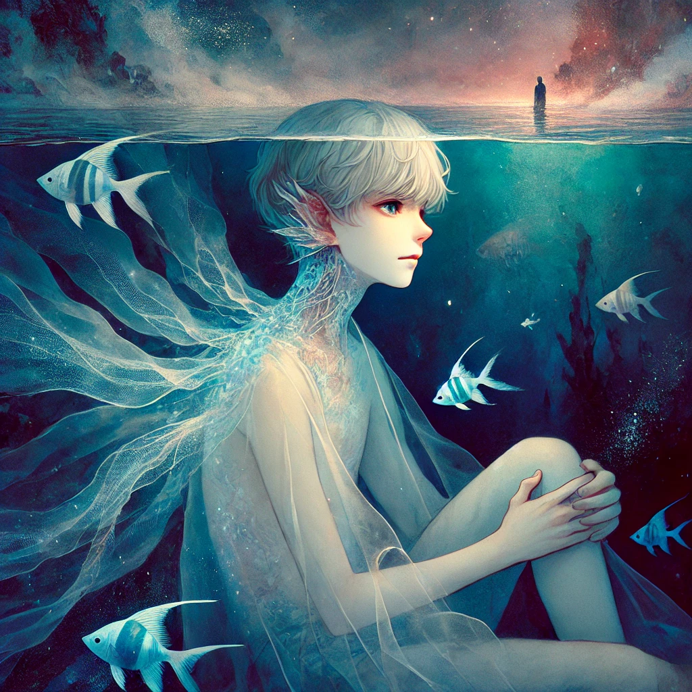

작가
구병모
출판일
2011년
감상평에 대한 AI그림
아가미의 주인공 곤이 자신의 정체성에 대해 고민하는 것을 보고 청소년기의 나 역시 정체성에 대해 깊이 고민했던 기억이 있다. 사회적 존재로서의 나와 진짜 나 자신을 진중히 고민하고 있을 청소년들에게 이 책을 추천하고 싶다.

감상평에 대한 AI평가
이 감상평에 대한 평가는 다음과 같습니다.
✨ 개인적 경험과의 연결:독자가 작품을 단순히 읽는 데서 그치지 않고 자신의 경험과 비교·반추하며 더 깊이 이해하게 된 점이 드러납니다.
✨ 정체성에 대한 보편적 고민:이 책이 특정 인물의 이야기에서 벗어나 보편적인 성장과 자기 발견의 과정으로 읽힐 수 있음을 시사합니다.
✨ 청소년에게의 추천 의도:단순한 감상을 넘어, 같은 고민을 하는 독자에게 도움이 될 수 있다는 점에서 작품의 가치와 메시지를 적극적으로 전달하려는 의도를 보여줍니다.